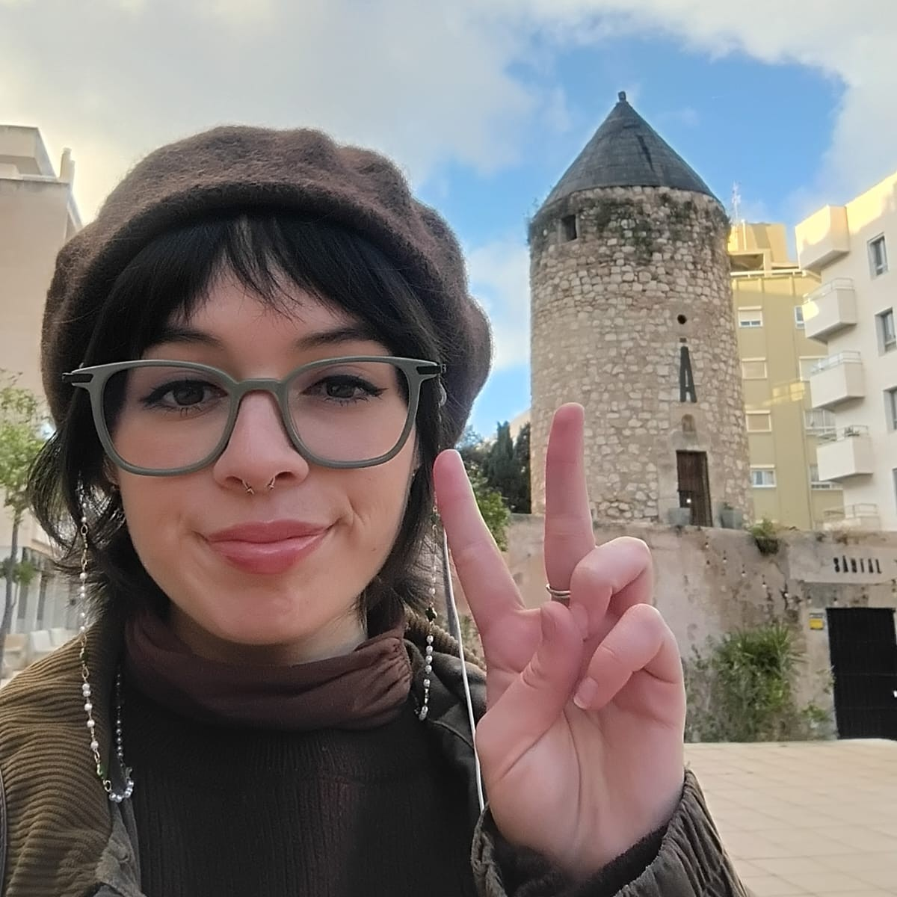

Sobre mí
Mi nombre es Luciana Valdés. Soy estudiante de primer año de Diseño en la Pontificia Universidad Católica de Valparaíso.
Siempre me he considerado una persona observadora del entorno en el cual me desenvuelvo y en la actualidad muchos de los espacios en los que convivimos son digitales: redes sociales, páginas web y aplicaciones. El diseño ligado al código me entrega herramientas para idear y cuidar la habitabilidad de estos espacios.
Además, el diseño también me ha permitido integrar distintos intereses personales como la música, los videojuegos y técnicas de creación como el grabado. Se pueden apreciar aportes directos de estas inspiraciones en todos mis proyectos, incluído el diseño de este portafolio.

Imagen escrita
Imagen escrita es una asignatura que se centra en la intersección entre diseño, la programación y arte generativo. Utilizando p5.js como herramienta principal, el curso explora los fundamentos de la programación creativa y su aplicación en el diseño visual interactivo.
A través del creative coding se hace énfasis en el pensamiento computacional como herramienta de diseño, fomentando un enfoque innovador en la resolución de problemas visuales y la creación artística. La integración de herramientas de IA busca ampliar las posibilidades creativas y técnicas, sirviendo como complemento al proceso de diseño y programación.